Three directions · One fixed room · 21 October 2026
Unit 408 — three bedroom directions (M, N, O)
Three new, fully sourced directions for Isah and Ivan, distinct from the twelve earlier schemes: M walnut and poppy red with bare-bulb light; N butter yellow, bamboo and an embroidered headboard with a sand duvet and one chocolate vase; O charcoal, white marble and copper. Every visible piece is a real catalogue or retailer product; technical essentials stay common by agreement.
A comparison for one chosen scheme. Quantities and budgets apply to that scheme. Star (☆) any piece in the schedules to collect it under Picks.
Walnut Poppy
₱485,000–₱539,000Planning range Direction NButter Embroidery
₱328,000–₱382,000Planning range Direction OCopper Marble
₱466,000–₱520,000Planning rangeThe fixed brief
What every scheme must satisfy
- 01
MANDATORY: finished 50 mm mattress, 72 × 78 inches (1828.8 × 1981.2 mm), on continuous flat support with no exposed slats or gaps. No thick mattress, topper or box spring.
- 02
All prices assume new purchases. Three distinct sets of visible furniture, bedside lamps, fixtures, mirrors, rugs, textiles, plants and decor. Matching bedside pairs within each design.
- 03
Closed practical bedside storage, armrests on every chair, compact console with sourced decor. No extra generic styling objects.
- 04
75-inch wall TV baseline; 65-inch minimum, 85-inch optional pending price and clearance checks. 65-inch reference saves ₱12,000 in merchandise before contingency.
- 05
Split AC at the window-side corner of the TV wall, with airflow directed away from sleepers. Installer must verify location and capacity.
- 06
Mirror on the wall return between the two perpendicular doors. Preserve native irregular geometry, both doors, closet and warm narrow-block parquet.
- 07
Common technical essentials are owner-approved. Existing Davies Beige blackout/voile treatment and concealed old window AC remain a fixed room requirement.
Direction M
Walnut Poppy
Deep walnut Gervaise platform with grid-padded taupe headboard, walnut wing panels and attached walnut drawers as the bedside pair; one poppy-red velvet cushion and one oxblood-red bottle vase as the only colour; black stone-jug lamps and a bare-bulb Mega Bulb pendant on a black cord; taupe wool flatweave with parquet margins. Squint phrase: walnut and red.

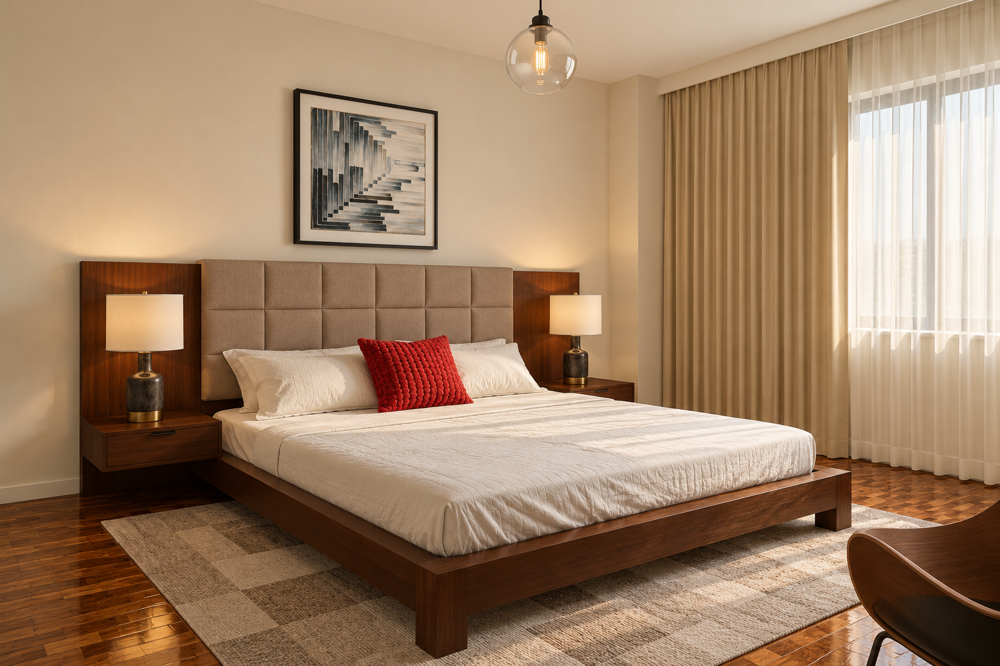

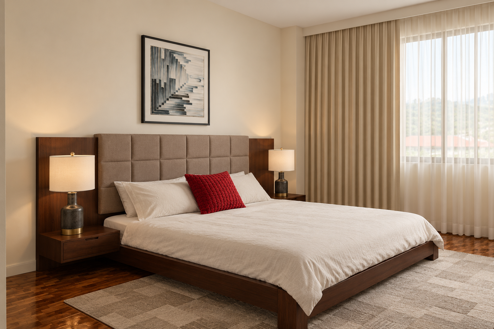

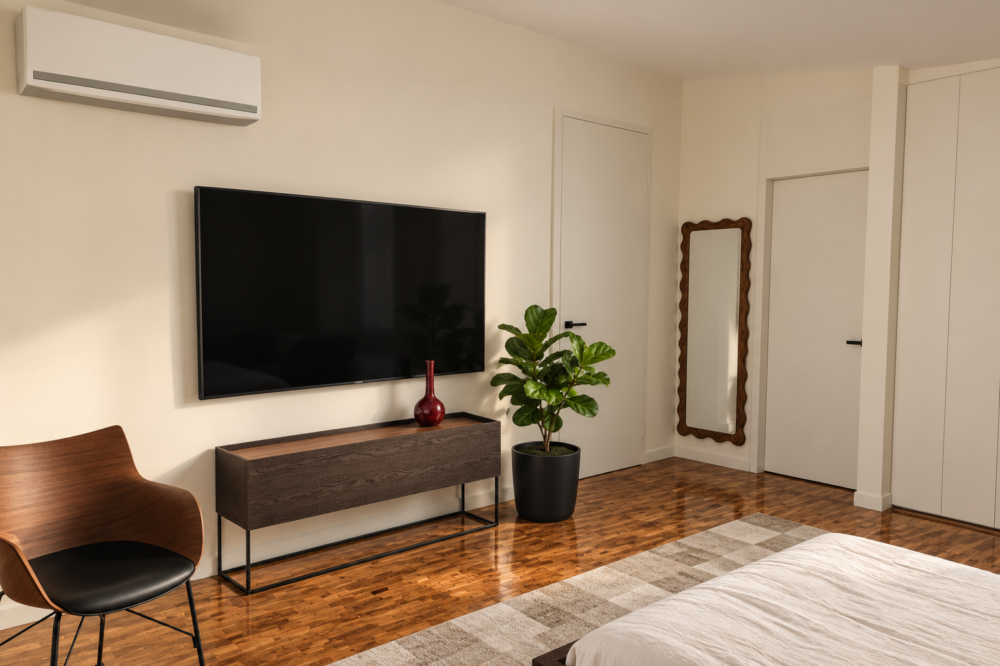
Style renders are AI images (Codex image generation, sketch-to-render) painted over the dimension-led model views below, with the original parquet photo and the supplier product photos as references: a style interpretation of each scheme, not a dimension certification; check every piece against the schedule.

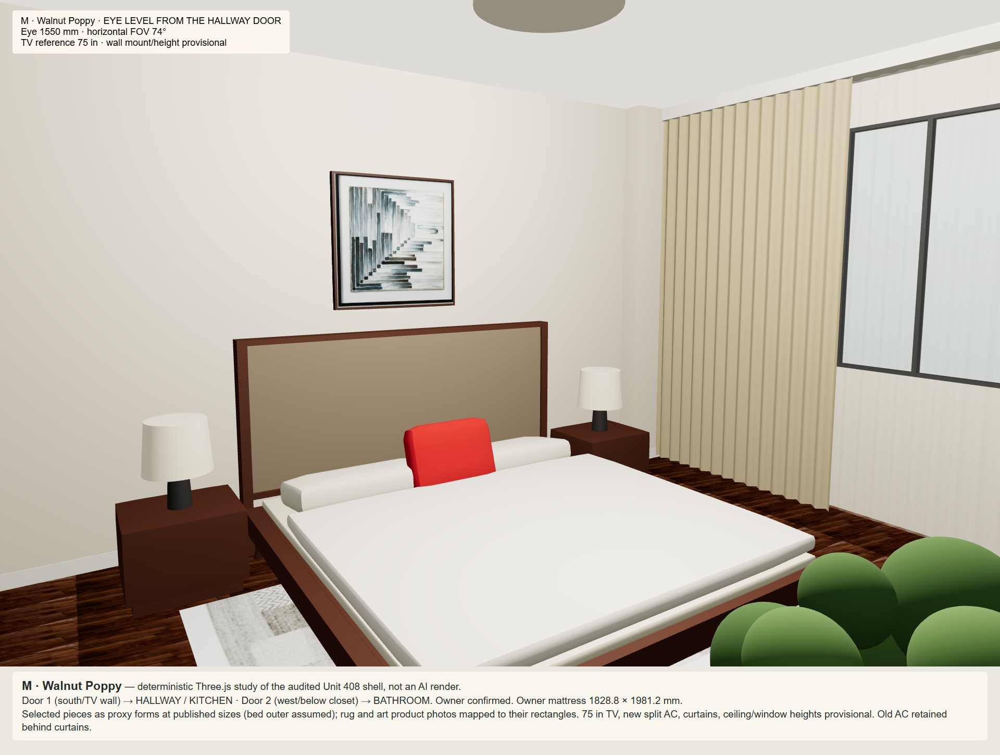

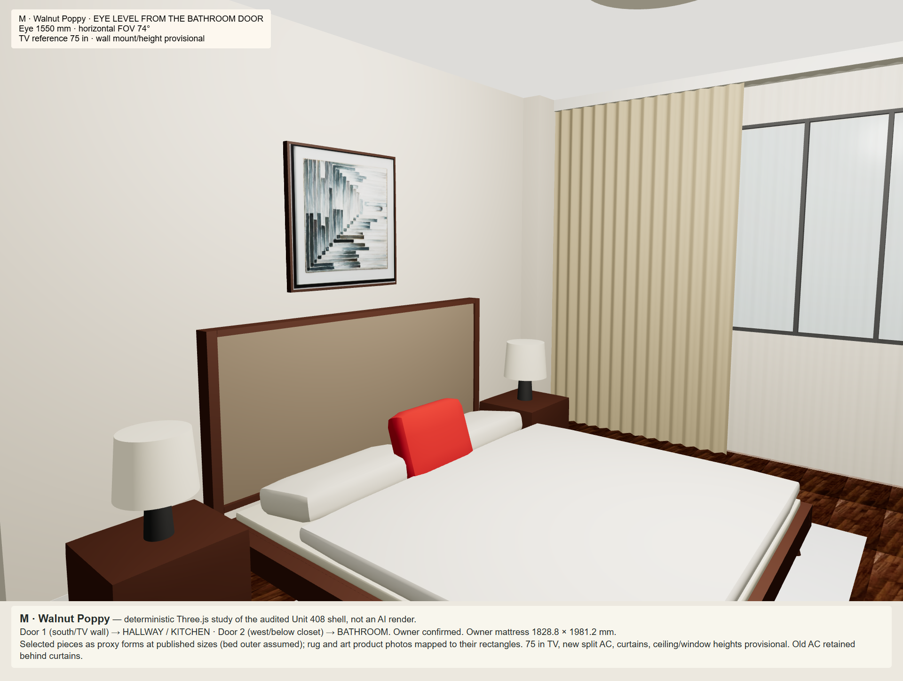

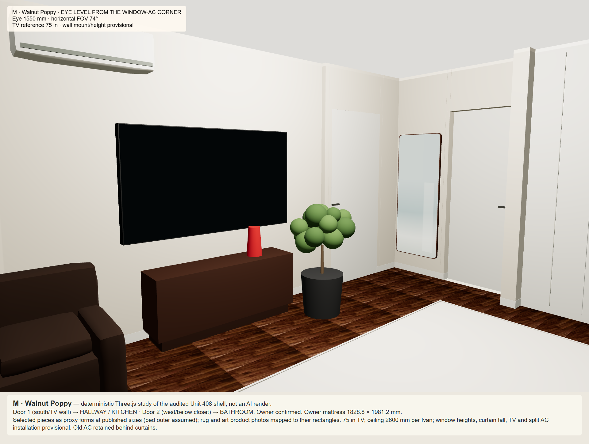
Model views are deterministic Three.js views of the audited Unit 408 shell (parquet, curtains, window, doors, closet, 75 in TV, new split AC) with the selected pieces as proxy forms at published or assumed sizes and the rug and art photos mapped to their rectangles; not AI renders, finishes approximate.
The reference board contains supplier product photographs.

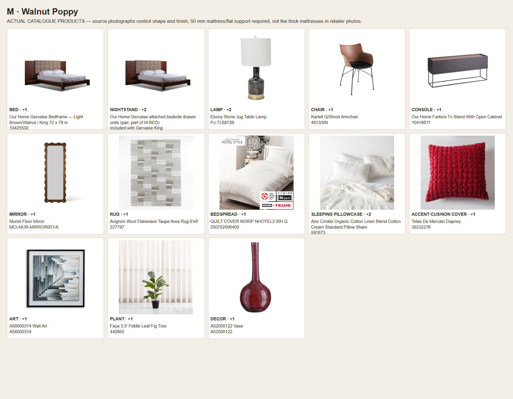

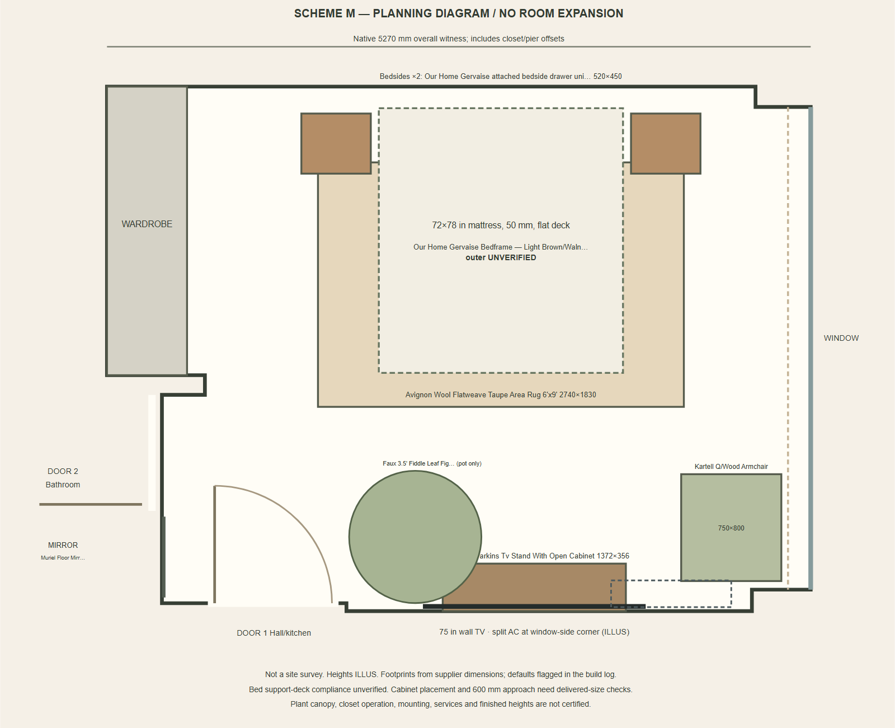
Space & fit
- Gervaise King outer size is not published; planning envelope 1990 × 2140 mm platform plus attached wing/drawer units about 520 mm each side (total about 3.0 m) — confirm with Our Home before order.
- The attached drawers are the bedside pair: no loose bedsides are added.
- Avignon rug 6 × 9 ft turned across the bed leaves about 380 mm of parquet across the room and more along it.
- Farkins console 1372 mm leaves the window corner for the Q/Wood chair.
Every scheduled itemDirection M · selected pieces14 rows · 1 quote required
14 scheduled items
| Starred | Piece & exact variant | Qty / scheme | Unit price | Line price | Source & fulfillment |
|---|---|---|---|---|---|
bedOur Home Gervaise Bedframe — Light Brown/Walnut / King 72 x 78 inLight Brown/Walnut / King 72 x 78 in Dimensions & source notesNotes: Kiln-dried solid-wood frame and legs, stain finish, grid-padded upholstered headboard, extra-wide walnut wing panels with attached floating drawers (photo). Deck construction unpublished → REQUIRED-FLAT-DECK applies. King outer size unpublished. An earlier pack excluded Gervaise because its attached drawers could not honestly be removed from a render; M uses them as the bedside pair instead. Price basis: Our Home Shopify product JSON, King 72×78 variant |
1M | ₱52,155Source price: 2026-10-21 | ₱52,155 | Supplier JSON available=True (read 2026-10-20 (Our Home JSON in the frozen king-bed research)) | Cebu delivery unconfirmedSupplier page ↗ | |
 nightstandOur Home Gervaise attached bedside drawer units (pair, part of M-BED)Light Brown/Walnut Dimensions & source notesDimensions (mm): width: 520; depth: 450; height: 400 Notes: Closed floating walnut drawer box on each side, attached to the wing panels; matching by construction. Planning size 520 × 450 × 400 mm (from photo proportions) — confirm. Price basis: Included in Our Home Gervaise King price |
2M | Quote required | Quote required | Included in the M-BED price per the Gervaise listing (drawers attached to the headboard wings): confirm with Our Home, else QUOTE REQUIRED | dimensions unpublishedSupplier page ↗ | |
lampEbony Stone Jug Table LampEbony Stone Jug Table Lamp; official listing SKU PJ-TL6872B Dimensions & source notesDimensions (mm): width: 300; depth: 300; height: 600 Notes: Black stone jug base on a brass foot with a white drum shade: a dark, weighty bedside glow beside the walnut drawers (bare-bulb character stays with the Mega Bulb pendant). Dimensions unpublished — planning Ø300 × 600 mm; socket type to confirm. Price basis: Per selected exact variant Default Title; published PHP variant price, not a from-price. Table only; chairs or styling accessories not assumed included. |
2M | ₱13,099Source price: 2026-09-09 | ₱26,198 | In stock according to source | Cebu delivery: unconfirmed | price date 2026-09-09 | Mejore HomeSupplier page ↗ | |
chairKartell Q/Wood ArmchairKartell Q/Wood / Legs: Black Seat: Basic Veneer Dark Wood Black; manufacturer SKU 4913/SN Dimensions & source notesNotes: Moulded dark-wood veneer shell with integral arms on black legs; walnut-and-black echo of the bed and console. Width/depth not published. Price basis: Per selected official online-store variant: Kartell Q/Wood / Legs: Black Seat: Basic Veneer Dark Wood Black |
1M | ₱61,985Source price: 2026-09-10 | ₱61,985 | online_variant_available_cebu_stock_unconfirmed | Cebu delivery: unconfirmed | price date 2026-09-10 | KartellSupplier page ↗ | |
consoleOur Home Farkins Tv Stand With Open CabinetDark brown oak/Walnut Dimensions & source notesDimensions (mm): width: 1371.6; depth: 355.6; height: 600 Notes: Dark brown oak/walnut MDF box with flip-down door and open bay on a matte black metal base, 1372 × 356 × 600 mm. Price basis: Official online listed price for the exact variant; per item. Cebu branch price and delivered total unconfirmed. |
1M | ₱17,055Source price: 2026-09-08 | ₱17,055 | Online listing available | Cebu delivery: unconfirmed | price date 2026-09-08 | Our HomeSupplier page ↗ | |
mirrorMuriel Floor MirrorMuriel Floor Mirror; Dark Walnut; official listing SKU MCI-MUR-MIRROR001/A Dimensions & source notesDimensions (mm): width: 606; height: 1595 Notes: Dark walnut wavy-frame floor mirror 606 × 1595 mm leaning on the ~690 mm return (≈ 40 mm each side). Price basis: Per selected exact variant Dark Walnut; published PHP variant price, not a from-price. |
1M | ₱25,600Source price: 2026-09-09 | ₱25,600 | In stock according to source | Cebu delivery: unconfirmed | price date 2026-09-09 | MejoreSupplier page ↗ | |
rugAvignon Wool Flatweave Taupe Area Rug 6'x9'Avignon Wool Flatweave Taupe Area Rug 6'x9'; Taupe; published SKU 227797; Shopify variant 50420123566296 Dimensions & source notesDimensions (mm): width: 1830; depth: 2740 Notes: Wool flatweave in taupe with a fine woven check, 6 × 9 ft, turned across the bed; quiet ground for the walnut and the single red. Price basis: Per selected Philippine listing configuration; set quantities, covers and inserts follow exact title. Published PHP price excludes unquoted delivery/crating/assembly. |
1M | ₱37,995Source price: 2026-09-10 | ₱37,995 | Online listing available | Cebu delivery: unconfirmed | price date 2026-09-10 | Crate & BarrelSupplier page ↗ | |
ceilingMega Bulb SR2Silver / Black Fabric Cord Dimensions & source notesNotes: Mouth-blown clear glass bulb pendant with porcelain holder, 'Silver / Black Fabric Cord' style (photo and price are that variant, read live 21 Oct 2026; the frozen catalogue offer was Clear / Clear PVC Cord at PHP 16,800). Price basis: Design Story live variant price PHP 18,200 (product .js read 21 Oct 2026, research/variant-photos) |
1M | ₱18,200Source price: 2026-10-21 | ₱18,200 | Available online | Cebu delivery: unconfirmed | price date 2026-09-10 | &TraditionSupplier page ↗ | |
 bedspreadQUILT COVER NGRIP NHOTEL3 WH QSingle listed variant; SKU 250752596400 Dimensions & source notesNotes: White hotel-style quilt cover, Queen; thin, so the 50 mm mattress edge stays visible — confirm it is at least 72 in wide. Price basis: Official online store price for this exact variant (products.json variant 48085840560340: price 1999, compare-at 2499); per listed unit as titled |
1M | ₱1,999Source price: 2026-10-20 | ₱1,999 | online_variant_available_cebu_stock_unconfirmed | Cebu delivery: unconfirmed | price date 2026-10-20 | NitoriSupplier page ↗ | |
sleeping pillowcaseAire Crinkle Organic Cotton Linen Blend Cotton Cream Standard Pillow ShamVariant 'Cream'; SKU 591673 Dimensions & source notesNotes: Cotton-cream crinkle cotton-linen standard shams for the two LAPPTÅTEL pillows. Price basis: Official online store price for this exact variant (products.json variant 43189779169496: price 1435, compare-at 3599); per listed unit as titled |
2M | ₱1,435Source price: 2026-10-20 | ₱2,870 | online_variant_available_cebu_stock_unconfirmed | Cebu delivery: unconfirmed | price date 2026-10-20 | Crate & BarrelSupplier page ↗ | |
accent cushion coverTelas De Mercato DapneyRed Dimensions & source notesDimensions (mm): width: 400; height: 400 Notes: Textured poppy-red velvet cushion 40 × 40 cm — the single red textile. Price basis: Official public online catalog price for the selected variant; per item. Cebu branch quotation and delivered total unconfirmed. |
1M | ₱1,979.10Source price: 2026-09-10 | ₱1,979.10 | Online listing available | Cebu delivery: unconfirmed | price date 2026-09-10 | Telas de MercatoSupplier page ↗ | |
artA58000314 Wall ArtA58000314 Wall Art; manufacturer SKU A58000314; Default Title; Black/White Dimensions & source notesDimensions (mm): width: 800.1; depth: 39.878; height: 800.1 Notes: Black-and-grey stepped brush abstract, framed 800 × 800 mm, centred over the grid headboard: graphic black against the walnut, echoing the black lamp bases and cord. Price basis: Per exact listed official Philippine storefront variant; verify quantity/configuration in listing. Cebu branch quotation is not established. |
1M | ₱19,300Source price: 2026-09-10 | ₱19,300 | online_variant_available_cebu_stock_unconfirmed | Cebu delivery: unconfirmed | price date 2026-09-10 | AshleySupplier page ↗ | |
plantFaux 3.5' Fiddle Leaf Fig TreeFaux 3.5' Fiddle Leaf Fig Tree; Single listed configuration; published SKU 442662; Shopify variant 42694863814872 Dimensions & source notesDimensions (mm): width: 990.6; depth: 990.6; height: 1143 Notes: Faux fiddle-leaf fig 1143 mm in its black pot beside the console. Price basis: Per selected Philippine listing configuration; set quantities, covers and inserts follow exact title. Published PHP price excludes unquoted delivery/crating/assembly. |
1M | ₱5,999Source price: 2026-09-10 | ₱5,999 | Online listing available | Cebu delivery: unconfirmed | price date 2026-09-10 | Crate & BarrelSupplier page ↗ | |
decorA52000122 VaseA52000122 Vase; manufacturer SKU A52000122; Default Title; Deep Red Dimensions & source notesDimensions (mm): width: 226.06; depth: 226.06; height: 500.38 Notes: Oxblood/poppy-red speckled glazed bottle vase 226 × 500 mm on the console — the single red object. Price basis: Per exact listed official Philippine storefront variant; verify quantity/configuration in listing. Cebu branch quotation is not established. |
1M | ₱12,600Source price: 2026-09-10 | ₱12,600 | online_variant_available_cebu_stock_unconfirmed | Cebu delivery: unconfirmed | price date 2026-09-10 | AshleySupplier page ↗ |


Direction N
Butter Embroidery
Francis Libiran Fulton bed with an embroidered, slightly winged light-neutral headboard; butter-yellow print cushions and white pillowcases on a sand-camel Brave Brown duvet; Imogen rattan-door bedsides, FRYKSÅS rattan console, AGEN rattan armchair and a bamboo MISTERHULT pendant; pleated KUDDLAVA lamps; yellow-beige TELEGRAFLINJE flat-weave. Squint phrase: yellow, bamboo, embroidery.

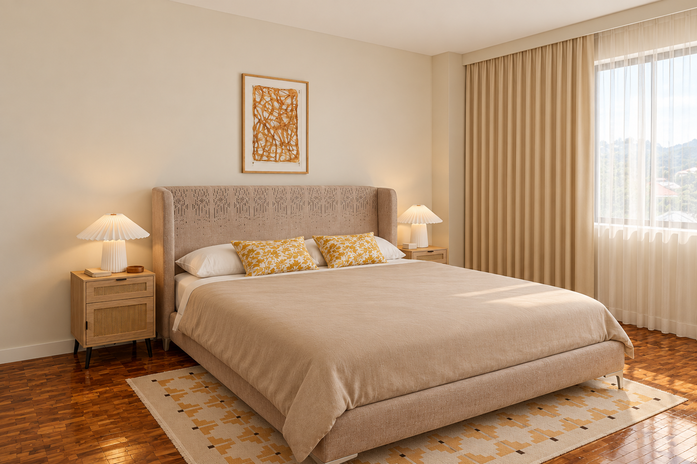

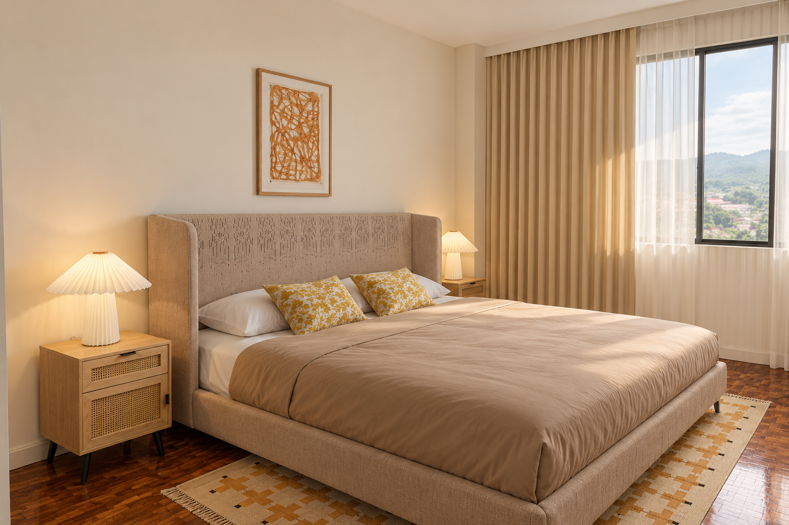

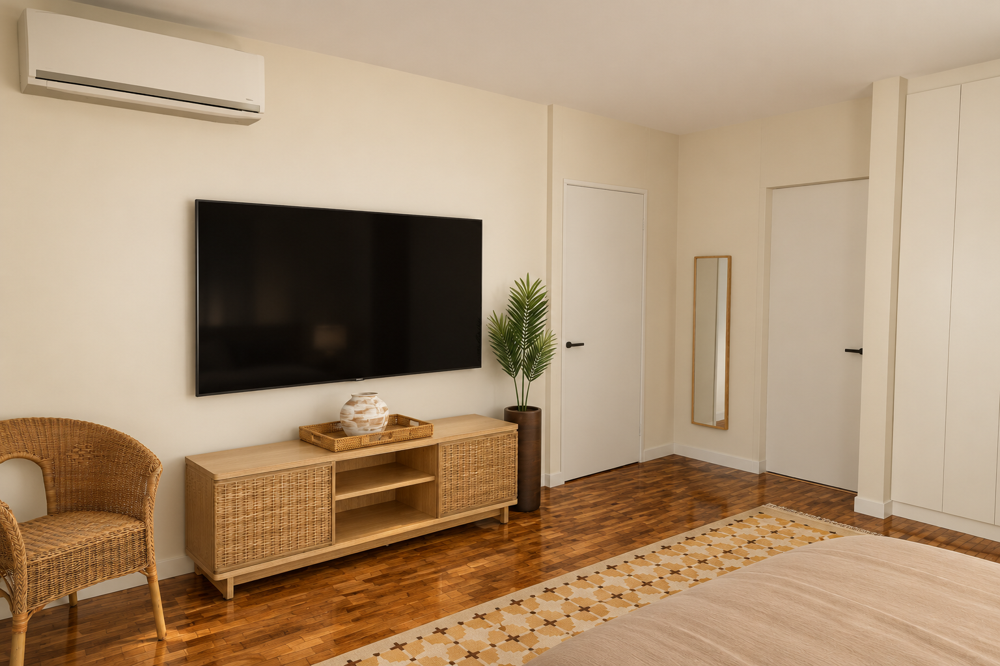
Style renders are AI images (Codex image generation, sketch-to-render) painted over the dimension-led model views below, with the original parquet photo and the supplier product photos as references: a style interpretation of each scheme, not a dimension certification; check every piece against the schedule.

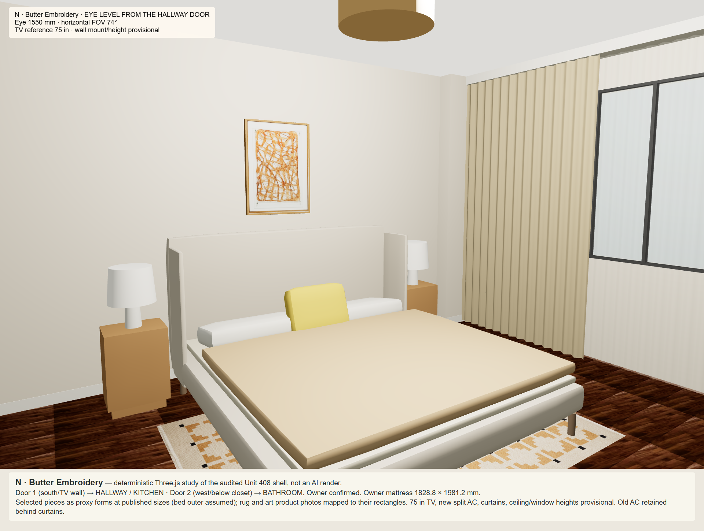

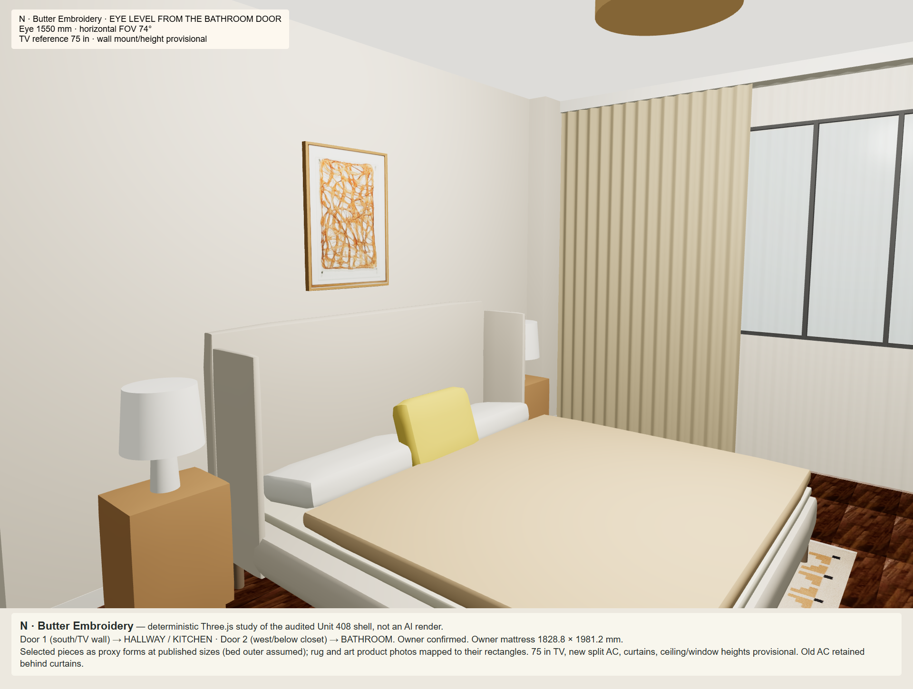

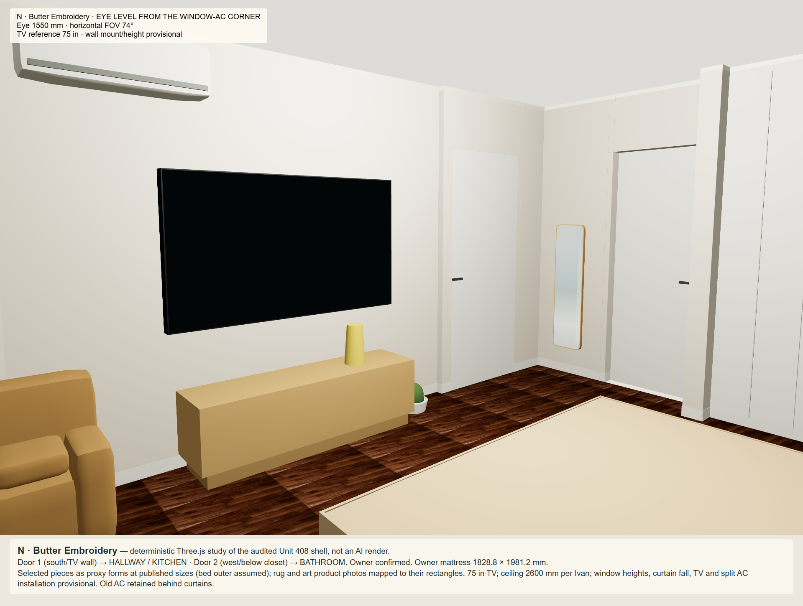
Model views are deterministic Three.js views of the audited Unit 408 shell (parquet, curtains, window, doors, closet, 75 in TV, new split AC) with the selected pieces as proxy forms at published or assumed sizes and the rug and art photos mapped to their rectangles; not AI renders, finishes approximate.
The reference board contains supplier product photographs.

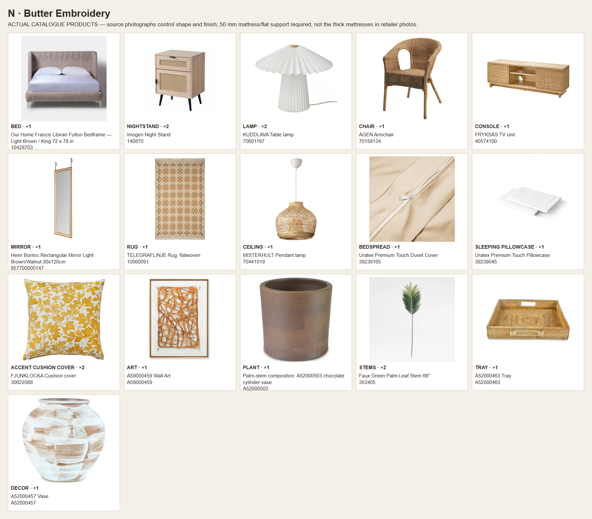

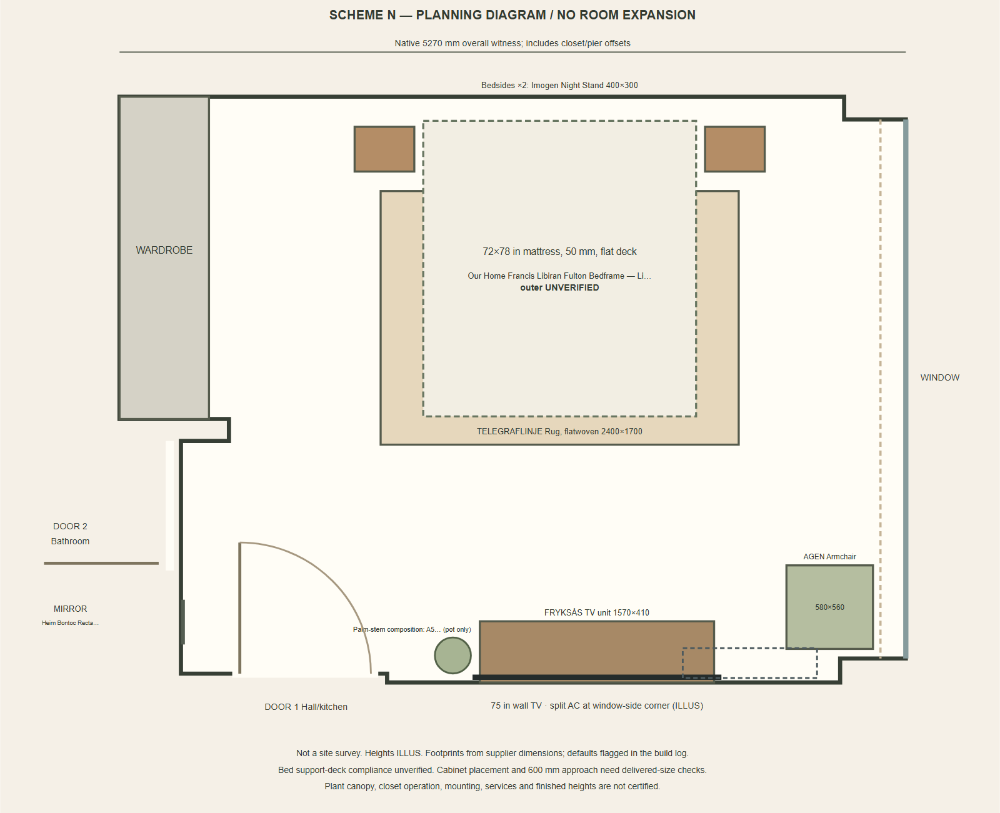
Space & fit
- Fulton King outer size is not published (the listed L211 × W185 × H117 cm is the Queen listing); planning envelope mattress + 160 mm each way, headboard 1170 mm.
- Imogen night stands showed sold out in the frozen capture — re-check stock before order (fallback: same-scheme swap logged in SELECTION-MATRIX.md).
- FRYKSÅS TV unit 1570 mm is the longest console in the set; it stays under the 1600 mm limit.
Every scheduled itemDirection N · selected pieces16 rows
16 scheduled items
| Starred | Piece & exact variant | Qty / scheme | Unit price | Line price | Source & fulfillment |
|---|---|---|---|---|---|
bedOur Home Francis Libiran Fulton Bedframe — Light Brown / King 72 x 78 inLight Brown / King 72 x 78 in Dimensions & source notesNotes: Fully upholstered light-neutral frame and rails, embroidered subtle-pattern headboard with slightly winged sides (supplier text and photo). Support construction unpublished → REQUIRED-FLAT-DECK applies. King outer size unpublished. Price basis: Our Home Shopify product JSON, King 72×78 variant |
1N | ₱59,950Source price: 2026-10-21 | ₱59,950 | Supplier JSON available=True (read 2026-10-20 (Our Home JSON in the frozen king-bed research)) | Cebu delivery unconfirmedSupplier page ↗ | |
nightstandImogen Night StandSKU 140870; Oak + Natural Dimensions & source notesDimensions (mm): width: 400; depth: 300; height: 575 Notes: Oak melamine body with a closed drawer and a plastic-rattan cane door on black splayed legs, 400 × 300 × 575 mm. SOLD OUT in the frozen capture — re-check stock. Price basis: per listed item; selected exact variant |
2N | ₱1,890Source price: 2026-09-08 | ₱3,780 | sold_out_online | Cebu delivery: unconfirmed | price date 2026-09-08 | Mandaue FoamSupplier page ↗ | |
 lampKUDDLAVA Table lampKUDDLAVA Table lamp, pleated white, 28 cm; article 70601197 Dimensions & source notesNotes: White pleated table lamp, 28 cm — the pleated-shade light of N. Nickel/steel version not in the catalogue (swap logged). Price basis: Official Philippine product-page price for the complete selected listing/variant; included quantity follows the exact specification variant. Delivery and assembly are additional. |
2N | ₱599Source price: 2026-09-10 | ₱1,198 | In stock according to source | Cebu delivery: unconfirmed | price date 2026-09-10 | IKEASupplier page ↗ | |
 chairAGEN ArmchairAGEN Armchair, rattan/bamboo; article 70158134 Dimensions & source notesDimensions (mm): width: 580; depth: 560; height: 790 Notes: Natural rattan armchair with rounded arms, 580 × 560 × 790 mm; catalog listed — confirm stock. Price basis: Official Philippine product-page price for the complete selected listing/variant; included quantity follows the exact specification variant. Delivery and assembly are additional. |
1N | ₱2,999Source price: 2026-09-10 | ₱2,999 | Catalog listed | Cebu delivery: unconfirmed | price date 2026-09-10 | IKEASupplier page ↗ | |
 consoleFRYKSÅS TV unitFRYKSÅS TV unit, rattan, 157x41x49 cm; article 40574100 Dimensions & source notesDimensions (mm): width: 1570; depth: 410; height: 490 Notes: Rattan-door TV unit 1570 × 410 × 490 mm, beige. Catalog listed — confirm stock. Price basis: Official Philippine product-page price for the complete selected listing/variant; included quantity follows the exact specification variant. Delivery and assembly are additional. |
1N | ₱14,999Source price: 2026-09-10 | ₱14,999 | Catalog listed | Cebu delivery: unconfirmed | price date 2026-09-10 | IKEASupplier page ↗ | |
mirrorHeim Bontoc Rectangular Mirror Light Brown/Walnut 30x120cmItem 957700000147; model 4873-C-822 Dimensions & source notesDimensions (mm): width: 300; height: 1200 Notes: Slim light-brown wood-framed full-length mirror 30 × 120 cm (Bontoc range) on the ~690 mm return; select the Light Brown finish. Price basis: Official online price for item 957700000147 (Wilcon GraphQL final_price 1199, regular_price 1199); per listed unit |
1N | ₱1,199Source price: 2026-10-20 | ₱1,199 | online_variant_available_cebu_stock_unconfirmed | Cebu delivery: unconfirmed | price date 2026-10-20 | HeimSupplier page ↗ | |
 rugTELEGRAFLINJE Rug, flatwovenTELEGRAFLINJE Rug, flatwoven, yellow-beige, 170x240 cm; article 10560091 Dimensions & source notesDimensions (mm): width: 1700; depth: 2400 Notes: Flat-woven yellow-beige rug with an ochre/brown motif, 170 × 240 cm, turned across the bed. Price basis: Official Philippine product-page price for the complete selected listing/variant; included quantity follows the exact specification variant. Delivery and assembly are additional. |
1N | ₱8,499Source price: 2026-09-10 | ₱8,499 | In stock according to source | Cebu delivery: unconfirmed | price date 2026-09-10 | IKEASupplier page ↗ | |
 ceilingMISTERHULT Pendant lampMISTERHULT Pendant lamp, bamboo/handmade, 45 cm; article 70441019 Dimensions & source notesDimensions (mm): width: 450; depth: 450; height: 400 Notes: Handmade bamboo pendant shade Ø45 cm. Price basis: Official Philippine product-page price for the complete selected listing/variant; included quantity follows the exact specification variant. Delivery and assembly are additional. |
1N | ₱4,999Source price: 2026-09-10 | ₱4,999 | In stock according to source | Cebu delivery: unconfirmed | price date 2026-09-10 | IKEASupplier page ↗ | |
bedspreadUratex Premium Touch Duvet CoverBrave Brown / Queen Dimensions & source notesNotes: Duvet cover, Queen, Brave Brown, which the store photographs as sand-camel (light warm tan sateen), under the yellow cushions (render follows the photo; live price read 21 Oct 2026 PHP 4,399.20 = frozen offer). Queen follows the set convention (thin cover, 50 mm edge visible) — confirm the cover is at least 72 in wide. Price basis: Our Home live variant price PHP 4,399.20 for Brave Brown / Queen (read 21 Oct 2026) = frozen catalogue offer |
1N | ₱4,399.20Source price: 2026-10-20 | ₱4,399.20 | online_variant_available_cebu_stock_unconfirmed | Cebu delivery: unconfirmed | price date 2026-10-20 | UratexSupplier page ↗ | |
sleeping pillowcaseUratex Premium Touch PillowcaseGlowing White / Queen 20x30 Dimensions & source notesNotes: Glowing White pillowcases, Queen 20 × 30 in, set of two (one set for the two pillows). Price basis: Our Home live variant price PHP 879.20 for Glowing White / Queen 20x30, set of two (read 21 Oct 2026) = frozen catalogue offer |
1N | ₱879.20Source price: 2026-10-20 | ₱879.20 | online_variant_available_cebu_stock_unconfirmed | Cebu delivery: unconfirmed | price date 2026-10-20 | UratexSupplier page ↗ | |
 accent cushion coverFJUNKLOCKA Cushion coverFJUNKLOCKA Cushion cover, yellow/white, 50x50 cm; article 30622088 Dimensions & source notesDimensions (mm): width: 500 Notes: Yellow leaf-print cotton cushion covers 50 × 50 cm — the butter-yellow accent. Price basis: Official Philippine product-page price for the complete selected listing/variant; included quantity follows the exact specification variant. Delivery and assembly are additional. |
2N | ₱349Source price: 2026-09-10 | ₱698 | In stock according to source | Cebu delivery: unconfirmed | price date 2026-09-10 | IKEASupplier page ↗ | |
artA58000459 Wall ArtA58000459 Wall Art; manufacturer SKU A58000459; Default Title; Rich orange-brown finish Dimensions & source notesDimensions (mm): width: 599.948; depth: 34.29; height: 800.1 Notes: Ochre fibre-net relief in a light frame, 600 × 800 mm: a craft object that answers the embroidery. Price basis: Per exact listed official Philippine storefront variant; verify quantity/configuration in listing. Cebu branch quotation is not established. |
1N | ₱13,800Source price: 2026-09-10 | ₱13,800 | online_variant_available_cebu_stock_unconfirmed | Cebu delivery: unconfirmed | price date 2026-09-10 | AshleySupplier page ↗ | |
plantPalm-stem composition: A52000503 chocolate cylinder vaseA52000503 Vase; manufacturer SKU A52000503; Default Title; Brown Dimensions & source notesDimensions (mm): width: 241.3; depth: 241.3; height: 234.95 Notes: Chocolate-brown cylinder vase Ø241 × 235 mm holding the palm stems beside the console (plan footprint is this vase). Price basis: Per exact listed official Philippine storefront variant; verify quantity/configuration in listing. Cebu branch quotation is not established. |
1N | ₱9,000Source price: 2026-09-10 | ₱9,000 | online_variant_available_cebu_stock_unconfirmed | Cebu delivery: unconfirmed | price date 2026-09-10 | AshleySupplier page ↗ | |
stemsFaux Green Palm Leaf Stem 66"Faux Green Palm Leaf Stem 66"; Single listed configuration; published SKU 353405; Shopify variant 51611441070296 Dimensions & source notesDimensions (mm): width: 539.8; height: 1676.4 Notes: Two 66 in faux palm leaf stems in the chocolate vase (composition ≈ 1.8 m). Price basis: Per selected Philippine listing configuration; set quantities, covers and inserts follow exact title. Published PHP price excludes unquoted delivery/crating/assembly. |
2N | ₱1,349Source price: 2026-09-10 | ₱2,698 | Online listing available | Cebu delivery: unconfirmed | price date 2026-09-10 | Crate & BarrelSupplier page ↗ | |
trayA52000463 TrayA52000463 Tray; manufacturer SKU A52000463; Default Title; Brown Dimensions & source notesDimensions (mm): width: 400.05; depth: 400.05; height: 69.85 Notes: Square woven rattan tray 400 × 400 mm on the console. Price basis: Per exact listed official Philippine storefront variant; verify quantity/configuration in listing. Cebu branch quotation is not established. |
1N | ₱7,000Source price: 2026-09-10 | ₱7,000 | online_variant_available_cebu_stock_unconfirmed | Cebu delivery: unconfirmed | price date 2026-09-10 | AshleySupplier page ↗ | |
decorA52000457 VaseA52000457 Vase; manufacturer SKU A52000457; Default Title; Brown and white finish Dimensions & source notesDimensions (mm): width: 257.048; depth: 257.048; height: 244.348 Notes: White ceramic vase with brown brush strokes 257 × 244 mm on the tray. Price basis: Per exact listed official Philippine storefront variant; verify quantity/configuration in listing. Cebu branch quotation is not established. |
1N | ₱5,800Source price: 2026-09-10 | ₱5,800 | online_variant_available_cebu_stock_unconfirmed | Cebu delivery: unconfirmed | price date 2026-09-10 | AshleySupplier page ↗ |


Direction O
Copper Marble
Low charcoal SLATTUM bed with a rounded headboard on slim black legs; GT01 charcoal two-drawer bedsides with white marble-look tops and champagne legs; WEST fluted sideboard with a white stone top; Flowerpot VP1 dome pendant in polished copper; black Pantop cone lamps; dark-grey Safi rug, LILLEHEM charcoal armchair, Aosta black arch mirror and a monstera in a cement pot against white walls. Squint phrase: charcoal, marble, copper.

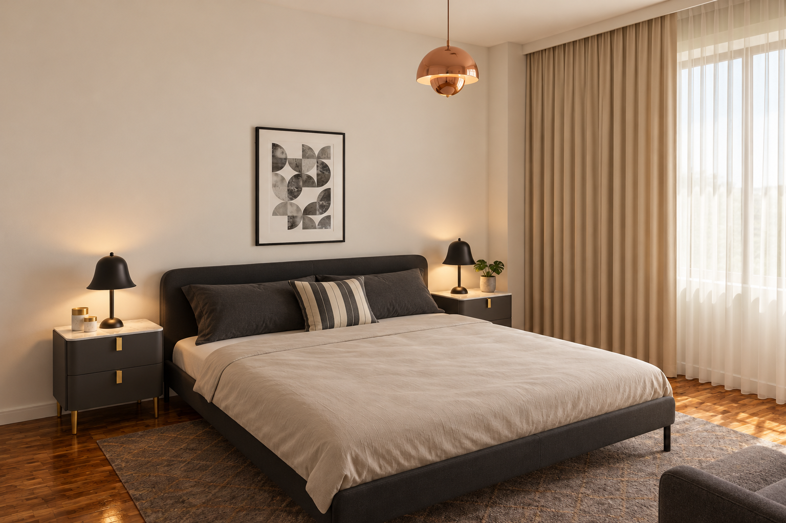

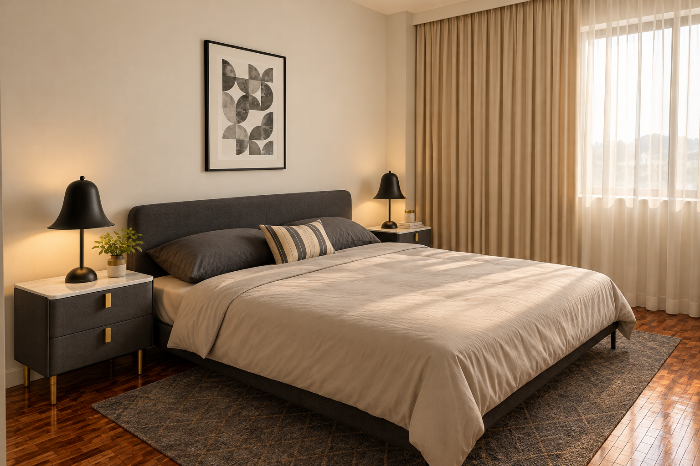

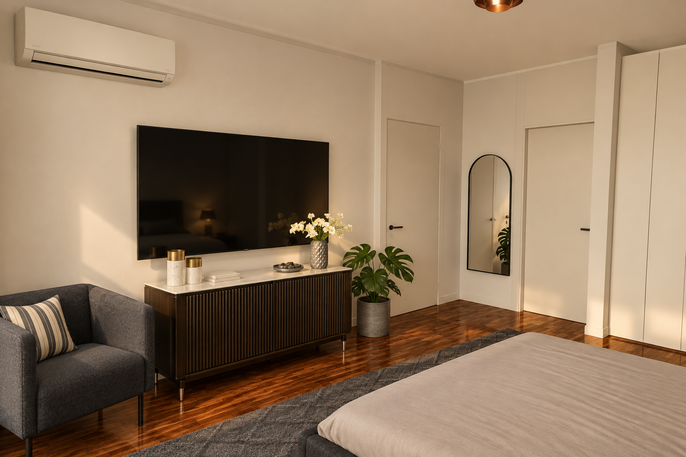
Style renders are AI images (Codex image generation, sketch-to-render) painted over the dimension-led model views below, with the original parquet photo and the supplier product photos as references: a style interpretation of each scheme, not a dimension certification; check every piece against the schedule.

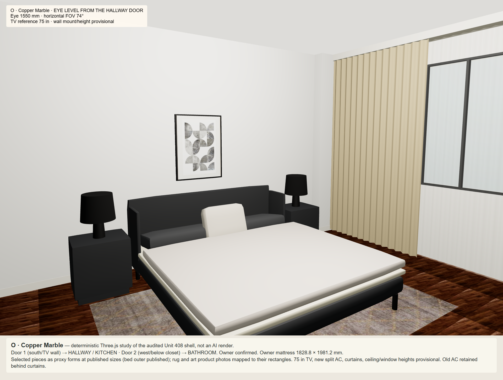

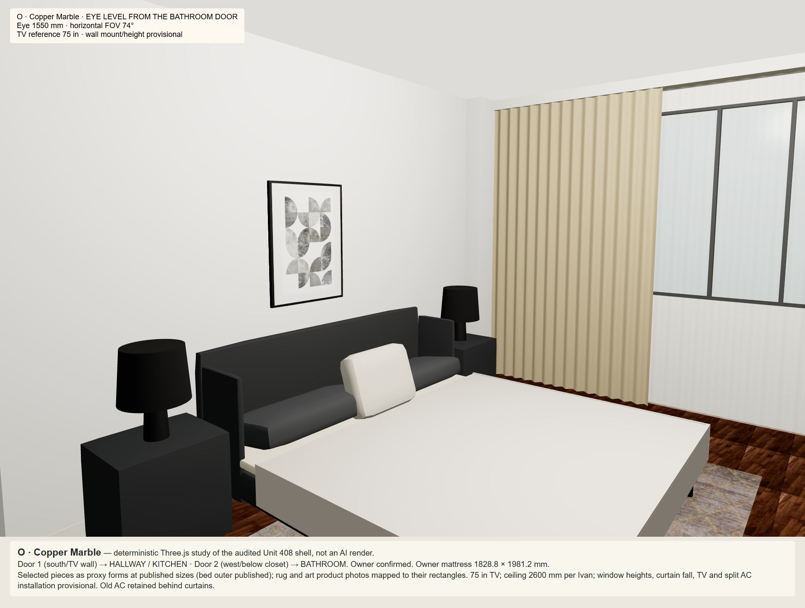

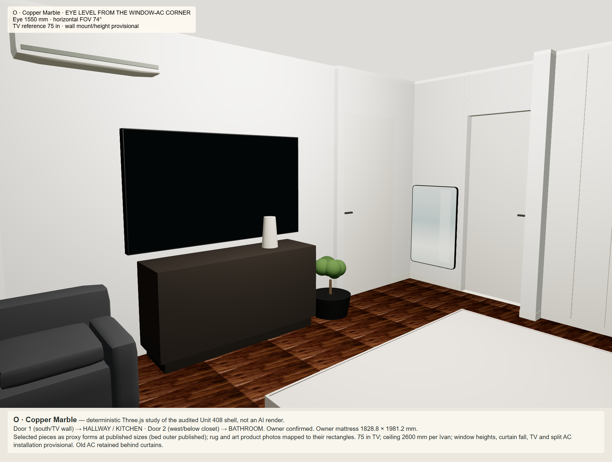
Model views are deterministic Three.js views of the audited Unit 408 shell (parquet, curtains, window, doors, closet, 75 in TV, new split AC) with the selected pieces as proxy forms at published or assumed sizes and the rug and art photos mapped to their rectangles; not AI renders, finishes approximate.
The reference board contains supplier product photographs.

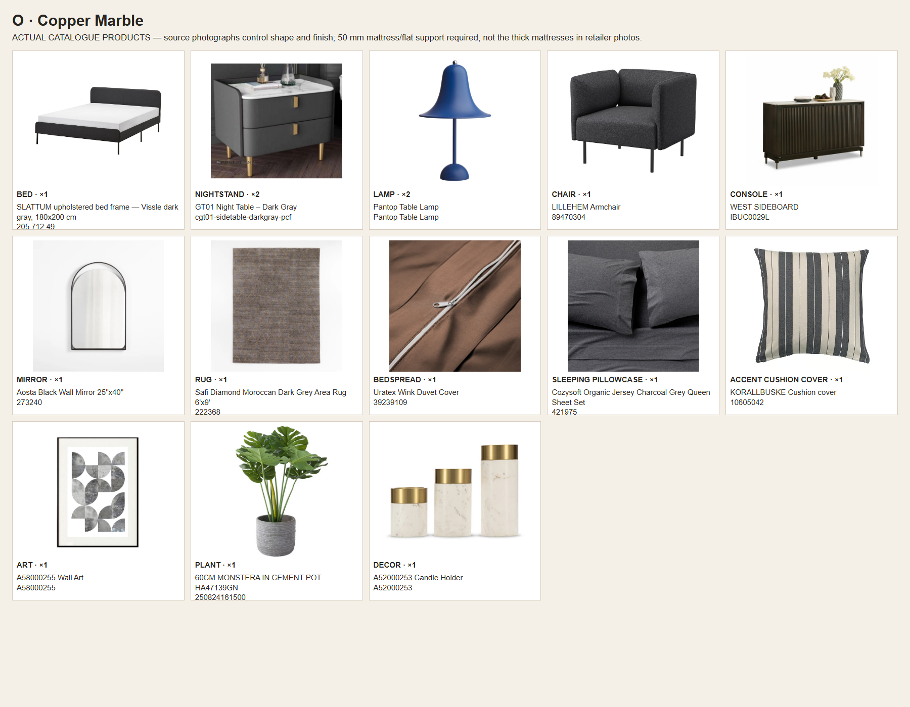

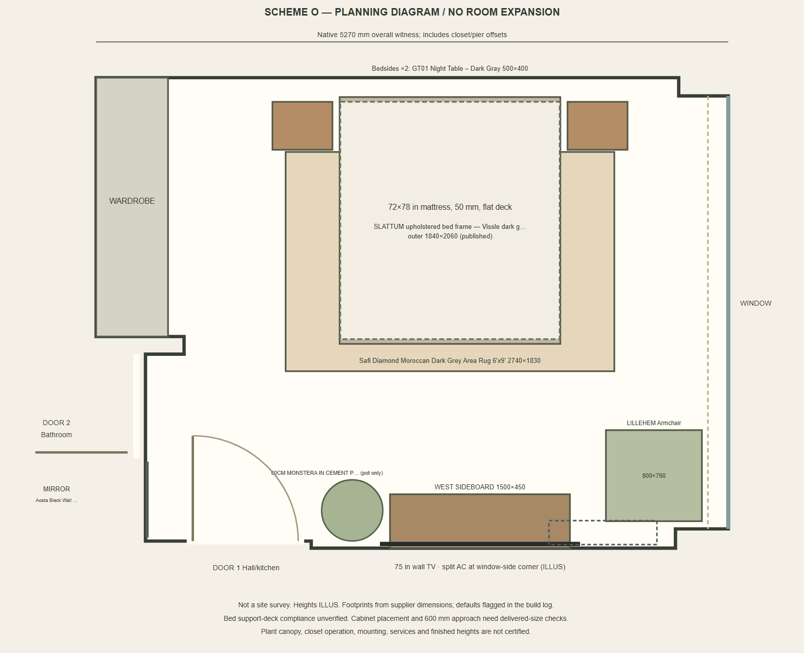
Space & fit
- SLATTUM 180 × 200 cm has an inner opening narrower than the 72 in mattress: the custom continuous deck must sit ON the rails (outer 1840 × 2060 mm), not inside them — REQUIRED-FLAT-DECK.
- GT01 and WEST dimensions are not published in the frozen catalogue; planning sizes 500 × 400 × 550 mm and 1500 × 450 × 780 mm — confirm WEST ≤ 1600 mm.
- Safi rug 6 × 9 ft (1830 × 2740 mm) turned across the bed keeps parquet margins.
Every scheduled itemDirection O · selected pieces14 rows
14 scheduled items
| Starred | Piece & exact variant | Qty / scheme | Unit price | Line price | Source & fulfillment |
|---|---|---|---|---|---|
bedSLATTUM upholstered bed frame — Vissle dark gray, 180x200 cmVissle dark gray, 180x200 cm Dimensions & source notesDimensions (mm): width: 1840; depth: 2060; height: 850 Notes: Charcoal polyester upholstery, low rounded headboard (H 85 cm), footboard 40 cm, slim black steel legs; outer W 184 × L 206 cm. Slatted base + steel midbeam included → CONDITIONAL: the custom continuous deck must sit on the rails because the 180 cm opening is narrower than the 72 in mattress. Rail height unpublished. Price basis: IKEA Philippines product page price PHP 8,999 (read 2026-10-21, research/king-beds) |
1O | ₱8,999Source price: 2026-10-21 | ₱8,999 | IKEA PH page read 2026-10-21: stock 'Checking availability' (unconfirmed) | Cebu delivery unconfirmedSupplier page ↗ | |
nightstandGT01 Night Table – Dark GraySKU cgt01-sidetable-darkgray-pcf Dimensions & source notesDimensions (mm): width: 500; depth: 400; height: 550 Notes: Charcoal upholstered two-drawer night table with a white marble-look top and champagne-gold legs (photo). Dimensions unpublished — planning 500 × 400 × 550 mm. Price basis: Published price for the selected listing variant |
2O | ₱4,350Source price: 2026-09-10 | ₱8,700 | In stock according to source | Cebu delivery: unconfirmed | price date 2026-09-10 | Furniture ManilaSupplier page ↗ | |
lampPantop Table LampMatt Black Dimensions & source notesDimensions (mm): width: 230; depth: 230; height: 380 Notes: Cone/bell metal table lamp Ø230 × 380 mm in Matt Black (photo is that colour; live price read 21 Oct 2026 PHP 22,400 each = frozen offer). No copper table lamp exists in the catalogue (swap logged); copper is carried by the VP1 pendant. Price basis: Design Story live variant price PHP 22,400 for Matt Black (read 21 Oct 2026) = frozen catalogue offer |
2O | ₱22,400Source price: 2026-09-10 | ₱44,800 | Available online | Cebu delivery: unconfirmed | price date 2026-09-10 | VerpanSupplier page ↗ | |
 chairLILLEHEM ArmchairLILLEHEM Armchair, Gunnared/dark gray metal; article 89470304 Dimensions & source notesDimensions (mm): width: 800; depth: 760; height: 730 Notes: Gunnared dark-gray armchair with arms on black legs, 800 × 760 × 730 mm. Price basis: Official Philippine product-page price for the complete selected listing/variant; included quantity follows the exact specification variant. Delivery and assembly are additional. |
1O | ₱18,600Source price: 2026-09-10 | ₱18,600 | In stock according to source | Cebu delivery: unconfirmed | price date 2026-09-10 | IKEASupplier page ↗ | |
consoleWEST SIDEBOARDDefault Title; SKU IBUC0029L Dimensions & source notesDimensions (mm): width: 1500; depth: 450; height: 780 Notes: Dark fluted-front sideboard with a white stone top on slim metal legs (photo; listing names the finish 'Ash Brown'). Dimensions unpublished — planning 1500 × 450 × 780 mm, confirm ≤ 1600 mm. Price basis: per selected listed variant |
1O | ₱44,950Source price: 2026-09-08 | ₱44,950 | In stock according to source | Cebu delivery: unconfirmed | price date 2026-09-08 | BLIMS Fine FurnitureSupplier page ↗ | |
mirrorAosta Black Wall Mirror 25"x40"Aosta Black Wall Mirror 25"x40"; Black; published SKU 273240; Shopify variant 51611369996504 Dimensions & source notesDimensions (mm): width: 635; depth: 50.8; height: 1016 Notes: Black metal arch-top wall mirror 635 × 1016 mm on the ~690 mm return. Price basis: Per selected Philippine listing configuration; set quantities, covers and inserts follow exact title. Published PHP price excludes unquoted delivery/crating/assembly. |
1O | ₱14,799Source price: 2026-09-10 | ₱14,799 | Online listing available | Cebu delivery: unconfirmed | price date 2026-09-10 | Crate & BarrelSupplier page ↗ | |
rugSafi Diamond Moroccan Dark Grey Area Rug 6'x9'Safi Diamond Moroccan Dark Grey Area Rug 6'x9'; Dark Grey; published SKU 222368; Shopify variant 44253405708504 Dimensions & source notesDimensions (mm): width: 1830; depth: 2740 Notes: Dark grey tone-on-tone diamond rug 6 × 9 ft, turned across the bed. Price basis: Per selected Philippine listing configuration; set quantities, covers and inserts follow exact title. Published PHP price excludes unquoted delivery/crating/assembly. |
1O | ₱59,995Source price: 2026-09-10 | ₱59,995 | Online listing available | Cebu delivery: unconfirmed | price date 2026-09-10 | Crate & BarrelSupplier page ↗ | |
ceilingFlowerpot VP1Polished copper Dimensions & source notesDimensions (mm): width: 230; depth: 230; height: 160 Notes: Layered hemispherical dome pendant Ø230 mm in Polished copper (photo and price are that variant, read live 21 Oct 2026; the frozen offer was Matt White at PHP 20,500): the copper accent. Price basis: Design Story live variant price PHP 28,600 for Polished copper (product .js read 21 Oct 2026, research/variant-photos) |
1O | ₱28,600Source price: 2026-10-21 | ₱28,600 | Available online | Cebu delivery: unconfirmed | price date 2026-09-10 | &TraditionSupplier page ↗ | |
bedspreadUratex Wink Duvet CoverGreat Gray / Queen Dimensions & source notesNotes: Duvet cover, Queen, 'Great Gray', which the store photographs as pale warm greige sateen (render follows the photo; live price read 21 Oct 2026 PHP 3,799.20 = frozen offer). Queen follows the set convention — confirm the cover is at least 72 in wide. Price basis: Our Home live variant price PHP 3,799.20 for Great Gray / Queen (read 21 Oct 2026) = frozen catalogue offer |
1O | ₱3,799.20Source price: 2026-10-20 | ₱3,799.20 | online_variant_available_cebu_stock_unconfirmed | Cebu delivery: unconfirmed | price date 2026-10-20 | UratexSupplier page ↗ | |
sleeping pillowcaseCozysoft Organic Jersey Charcoal Grey Queen Sheet SetSingle listed variant; SKU 421975 Dimensions & source notesNotes: Charcoal-grey organic jersey Queen sheet set used for its two pillowcases (the set's sheets are spare; DVALA stays the common flat sheet). Price basis: Official online store price for this exact variant (products.json variant 44480550404312: price 3995, compare-at 9999); per listed unit as titled |
1O | ₱3,995Source price: 2026-10-20 | ₱3,995 | online_variant_available_cebu_stock_unconfirmed | Cebu delivery: unconfirmed | price date 2026-10-20 | Crate & BarrelSupplier page ↗ | |
 accent cushion coverKORALLBUSKE Cushion coverKORALLBUSKE Cushion cover, light beige/anthracite, 50x50 cm; article 10605042 Dimensions & source notesDimensions (mm): width: 500 Notes: Light beige/anthracite striped cushion cover 50 × 50 cm. Price basis: Official Philippine product-page price for the complete selected listing/variant; included quantity follows the exact specification variant. Delivery and assembly are additional. |
1O | ₱499Source price: 2026-09-10 | ₱499 | In stock according to source | Cebu delivery: unconfirmed | price date 2026-09-10 | IKEASupplier page ↗ | |
artA58000255 Wall ArtA58000255 Wall Art; manufacturer SKU A58000255; Default Title; Black/White Dimensions & source notesDimensions (mm): width: 609.6; depth: 25.4; height: 787.4 Notes: Grey/black/white semicircle composition with marble-like texture, framed 610 × 787 mm: repeats the marble veining. Price basis: Per exact listed official Philippine storefront variant; verify quantity/configuration in listing. Cebu branch quotation is not established. |
1O | ₱10,300Source price: 2026-09-10 | ₱10,300 | online_variant_available_cebu_stock_unconfirmed | Cebu delivery: unconfirmed | price date 2026-09-10 | AshleySupplier page ↗ | |
 plant60CM MONSTERA IN CEMENT POT HA47139GNSingle listed variant; SKU 250824161500 Dimensions & source notesDimensions (mm): width: 510; depth: 470; height: 600 Notes: Faux monstera in a grey cement pot, 510 × 470 × 600 mm, beside the sideboard. Price basis: Official online store price for this exact variant (products.json variant 48340857815252: price 1609, compare-at 1609); per listed unit as titled |
1O | ₱1,609Source price: 2026-10-20 | ₱1,609 | online_variant_available_cebu_stock_unconfirmed | Cebu delivery: unconfirmed | price date 2026-10-20 | NitoriSupplier page ↗ | |
decorA52000253 Candle HolderA52000253 Candle Holder; manufacturer SKU A52000253; Default Title; Gold/White Dimensions & source notesDimensions (mm): width: 100.076; depth: 100.076; height: 240.03 Notes: White marble candle holders with brass rims (set) on the sideboard. Price basis: Per exact listed official Philippine storefront variant; verify quantity/configuration in listing. Cebu branch quotation is not established. |
1O | ₱17,000Source price: 2026-09-10 | ₱17,000 | online_variant_available_cebu_stock_unconfirmed | Cebu delivery: unconfirmed | price date 2026-09-10 | AshleySupplier page ↗ |


Your shortlist
Starred pieces
Star ☆ any piece in the schedules above and it is listed here by direction with a running total. Stars are saved in this browser only. Use Copy link to send them to someone else (the link opens with the same stars) or Copy as text for a message.
No starred pieces yet.
Plain-text list
Compare the complete plan
Budgets, with the open costs visible
Quoted work and fulfillment remain unresolved. The planning ranges include the allowances below, plus 10% contingency, rounded up to ₱1,000.
| Per chosen scheme | MWalnut Poppy | NButter Embroidery | OCopper Marble |
|---|---|---|---|
| Selected design pieces | ₱283,935.10 | ₱141,897.40 | ₱266,645.20 |
| Common essentials & room treatments | ₱121,203.50 | ₱121,203.50 | ₱121,203.50 |
| Priced schedule subtotal | ₱405,138.60 | ₱263,100.90 | ₱387,848.70 |
| Working planning range | ₱485,000 to ₱539,000 | ₱328,000 to ₱382,000 | ₱466,000 to ₱520,000 |
Planning allowances ₱35,000–₱84,000 before contingency
| Work or provision | Low | High | Basis & limits |
|---|---|---|---|
| Cebu freight,delivery and handling | ₱5,000 | ₱15,000 | Planning allowance only; no shipping rates/address allocation obtained. Overseas freight not included. |
| Split-AC installation and normal pipe/electrical provision | ₱10,000 | ₱20,000 | Planning allowance only; actual pipe length,capacity,condensate path,condenser mounting and building permissions unmeasured. |
| TV/mirror/art/ceiling fixture installation and assembly | ₱5,000 | ₱10,000 | Planning allowance only; installer must specify anchors and verify substrate. Includes no structural rebuilding. |
| Paint touch-up and site coordination | ₱5,000 | ₱12,000 | Estimator reserve, not a contractor quote. Optional curtain LED is not selected, displayed or included as a retail item. |
| REQUIRED: custom50mm mattress,72×78in | ₱4,000 | ₱12,000 | Provisional reserve only,not a manufacturer price. Exact finished50mm thickness,cover and foam specification need supplier acceptance and quotation. Replaces rejected8in mattress; not added on top of it. |
| REQUIRED unless existing deck proven compliant: custom continuous flat support | ₱6,000 | ₱15,000 | Provisional reserve only,not a contractor quote. All current bed supports unverified. Must resolve structure,bearing,fixings,recess/rail height and bed warranty. No exposed slats accepted. |
Shared foundations
Common essentials & fixed room treatments
The fixed curtains and listed technical essentials are common room provisions. Scheme letters show where each row applies; quantities are per chosen scheme.
Every scheduled itemCommon room schedule14 rows · 2 quote required
14 scheduled items
| Starred | Piece & exact variant | Qty / scheme | Unit price | Line price | Source & fulfillment |
|---|---|---|---|---|---|
 bedding insertComforter & Duvet Insert WhiteVariant '54x86 inches'; SKU 123243 Dimensions & source notesNotes: Thin white comforter/duvet insert for the scheme duvet cover (hidden; one per chosen scheme). Price shown for the 54 × 86 in listing; buy the Queen size — confirm price. Price basis: Official online store price for this exact variant (products.json variant 43582066000050: price 980, compare-at 980); per listed unit as titled |
1M/N/O | ₱980Source price: 2026-10-20 | ₱980 | online_variant_available_cebu_stock_unconfirmed | Cebu delivery: unconfirmed | price date 2026-10-20 | Mandaue FoamSupplier page ↗ | |
 technical75-inch Crystal UHD TV UA75U8520HGXXP10179413 Dimensions & source notesNotes: TV is wall mounted; feet not used; published VESA400x300,21.6kg without stand. |
1M/N/O | ₱51,990 | ₱51,990 | Live retailer available=true; Cebu branch allocation unconfirmedSupplier page ↗ | |
 technicalTCL 1.5 HP split inverter TAC-13CSD/KEI210177771 Dimensions & source notesNotes: Equipment-only reference. 1.5HP is a budget candidate, not a heat-load approval; installer must confirm capacity, piping, drainage, condenser location and corner clearances. |
1M/N/O | ₱19,631.50 | ₱19,631.50 | Live retailer available=true; Cebu branch allocation unconfirmedSupplier page ↗ | |
 technicalTrue Vision extra-large TV wall mount TV73-69F, 60–120 in, 120 kg, VESA 400×300 listedTV73-69F (manufacturer product 5959) Dimensions & source notesNotes: Replaces the unavailable Westinghouse reference. Published 35×1005×625 mm; installer to confirm substrate, anchors, Samsung screw/spacer lengths and rear connector access. Price basis: Manufacturer current Store API price 2,990 (sale price not applied) |
1M/N/O | ₱2,990Source price: 2026-10-20 | ₱2,990 | Manufacturer store API is_in_stock:true, is_purchasable:true (technical research 20 Oct 2026) | Cebu delivery not checkedSupplier page ↗ | |
technicalMaster bedroom drapes + sheers,2 tracks,inverted pleats16 Oct2026 supplier quotation Dimensions & source notesNotes: Quoted master-bedroom discounted row. Davies Beige+voile remain owner selected, but this quote does not name exact fabric SKU; no claim of verified fabric match. Install/travel terms need reconfirmation. |
1M/N/O | ₱36,720 | ₱36,720 | DATED QUOTE - fabric identity and current scope require reconfirmationSupplier quote pending | |
technicalFinished valance/pelmet:1 of6 quoted areas22800/6 allocation Dimensions & source notesNotes: Equal allocation of quoted whole-apartment valance total22800 across6 areas. Not an independently quoted per-room price. |
1M/N/O | ₱3,800 | ₱3,800 | PLANNING ALLOCATION - supplier has not separately quoted this roomSupplier quote pending | |
technicalFour curtain pull sticks:1 of6 quoted areas11400/6 allocation Dimensions & source notesNotes: Quoted whole-apartment24sticks total11400; allocate4sticks1900. Confirm length/quantity and no-cord operation. |
1M/N/O | ₱1,900 | ₱1,900 | PLANNING ALLOCATION - supplier has not separately quoted this roomSupplier quote pending | |
 technicalDVALA flat sheet, white806.211.71 Dimensions & source notesNotes: Neatly wrap50mm mattress; not an elastic fitted-sheet claim.2400×2600 less1828.8×1981.2 leaves285.6mm per side and309.4mm per end before50mm depth; ample proposed tuck. Catalogue says63–71in beds; this is a proposed thin-mattress flat wrap, verify onsite. No thick mattress/duvet inferred. |
1M/N/O | ₱699 | ₱699 | https://schema.org/InStoreOnly; Cebu allocation unconfirmedSupplier page ↗ | |
| 2M/N/O | ₱399 | ₱798 | https://schema.org/InStock; Cebu allocation unconfirmedSupplier page ↗ | ||
 technicalSTOPP FILT anti-slip rug underlay301.830.84 Dimensions & source notesNotes: Two165×235cm sheets per rug, cut/combine flat beneath200×300cm rug to appropriate inset.190×280single-sheet variant90550205 wasOutOfStock and excluded. Current165×235 isInStoreOnly;Cebu fulfillment unconfirmed. |
2M/N/O | ₱499 | ₱998 | https://schema.org/InStoreOnly; Cebu allocation unconfirmedSupplier page ↗ | |
| 2M/N/O | ₱200 | ₱400 | https://schema.org/InStock; Cebu allocation unconfirmedSupplier page ↗ | ||
 technicalSOLHETTA E27 opal LED bulb 470 lm, 2-piece pack105.914.84 Dimensions & source notesNotes: Three 2-packs per scheme: bedside pair, ceiling fitting and spares. Socket types of Ebony Stone Jug, KUDDLAVA, Pantop, Mega Bulb, MISTERHULT and Flowerpot VP1 are not all published — confirm E27/E14 before purchase; Mega Bulb needs a decorative clear-filament bulb. |
3M/N/O | ₱99 | ₱297 | https://schema.org/InStoreOnly; Cebu allocation unconfirmedSupplier page ↗ | |
technicalMade-to-order mattress, finished 50 mm × 1828.8 × 1981.2 mmExact specification requires supplier acceptance Dimensions & source notesNotes: Real MTO service, not a verified off-the-shelf 50mm model. Reserve ₱4,000–12,000 below; never treat as free. |
1M/N/O | Quote required | Quote required | QUOTE REQUIRED; exact finished thickness not yet acceptedSupplier page ↗ | |
technicalContinuous flat bed support and any frame adaptationBed-specific engineered specification required Dimensions & source notesNotes: No slats or gaps at contact surface. Confirm load, bearing, fixings, seams, recess/rail height, finished mattress exposure, moisture requirements and warranty. Reserve ₱6,000–15,000 below. |
1M/N/O | Quote required | Quote required | QUOTE REQUIRED; all three frames conditionalSupplier quote pending |


Before ordering
Resolve these procurement gates
- No scheme is purchase-ready until the bed supplier accepts the exact 50 mm mattress and a continuous flat deck. Gervaise (M) and Fulton (N) publish no deck construction or King outer size; SLATTUM (O) has a slatted base and a 180 cm opening, so the deck must sit on its rails (rail height unpublished).
- Owner decision: an earlier pack excluded Gervaise because its drawers are attached to the headboard wings; M uses them as the bedside pair. Accept that, or swap M's bed and add a closed walnut bedside pair.
- Prices are frozen pass-3 catalogue references (snapshot 20 Oct 2026, 23:14–23:17 Manila) with each line's own price date; beds and soft goods were read from supplier JSON on 20 Oct 2026; six chosen-colour variants and the SLATTUM page were read live on 21 Oct 2026. Product existence and photos are verified; exact Cebu stock, address delivery and checkout totals are not.
- Colour and size gates: the Uratex Brave Brown (N) and Great Gray (O) covers photograph as sand-camel and pale greige; every Queen cover must be at least 72 in wide; GT01, WEST, Ebony Stone Jug, Q/Wood and Gervaise drawer sizes are unpublished; Imogen showed sold out in the capture; lamp and pendant socket types.
- TV mount is the True Vision TV73-69F (in stock per manufacturer API); installer to confirm substrate, anchors and Samsung fixings.
- Curtain ₱42,420 is the carried 16 October quote reference: ₱36,720 master treatment plus ₱3,800 valance and ₱1,900 sticks allocations. Remeasurement quote required.
- Trade/freight/mattress/deck reserves total ₱35,000–84,000 as estimator allowances, not supplier quotations. 10 % contingency added, totals rounded up to the next ₱1,000.
- Style renders are AI interpretations painted over the dimension-led model views; supplier photo boards, measured plans and this item schedule are the acceptance basis.
Source notes
- 44 visible selections across M/N/O, each with a supplier photo copied into dist/assets/products; no visible model or model family repeats across M, N, O or the twelve earlier schemes (UNIQUENESS-MATRIX.md).
- Catalogue prices are the frozen pass-3 Airtable capture (20 Oct 2026); the O bed price is the IKEA Philippines page read 21 Oct 2026. Where a published colour other than the priced variant is selected, the line says so and the price must be confirmed.
- No purchases, supplier contact or Airtable writes were made.